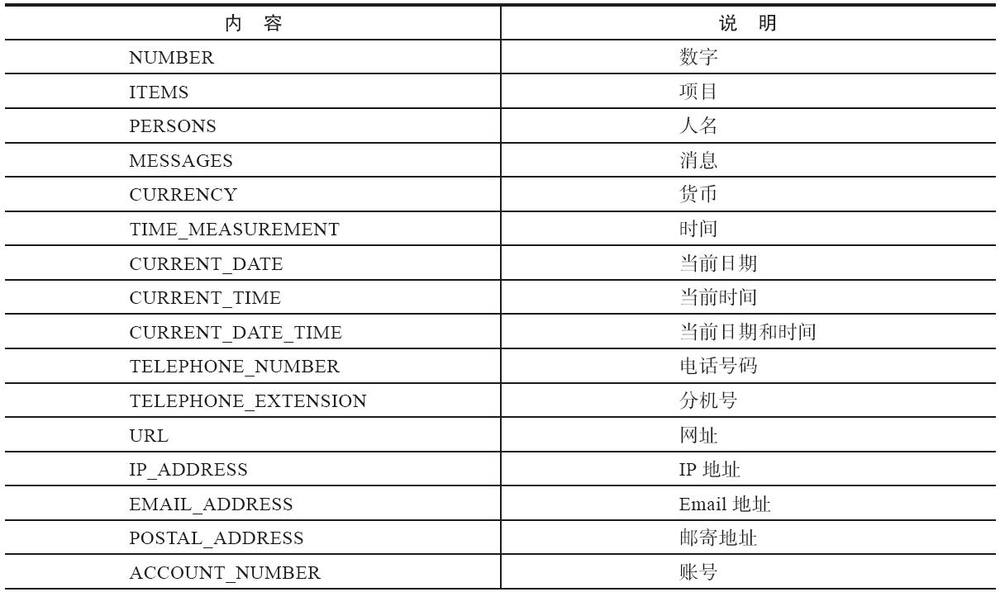

11.6 放音
上一节我们讲了各种录音方式的参数。实际上，放音也有好多门道。接下来我们来详细看一下。
11.6.1 playback的参数
我们先回顾一下，在前面的章节中，我们一直使用playback作为放音的例子。下列Dialplan设置可以播放声音文件/tmp/test.wav：
<action application="playback" data="/tmp/test.wav"/>
其中，/tmp/test.wav是一个文件名作为playback的参数。实际上，playback的参数范围比这个广得多，最典型的，playback的参数是一些“音频源”（以后，也可能有视频源），这些音频源大部分是由Format定义的，即我们在5.1.2节讲到的格式、文件接口（Format，File Interface）。这些文件接口一般会有打开（Open）和关闭（Close）、读（Read）和写（Write）等属性。其中，playback会从文件中“读”，而上面讲到的录音（record），实际上也使用这些文件接口，它会往文件中“写”。
这些文件接口有以下几类。
1.声音文件
对大部分声音文件的支持都是在mod_sndfile模块中实现的。该模块直接调用了libsndfile库，因而libsndfile库所支持的文件FreeSWITCH都能支持，典型的如WAV、AU、AIFF、VOX等。
<action application="playback" data="/tmp/test.wav"/>
<action application="playback" data="/tmp/test.au"/>
<action application="playback" data="/tmp/test.aiff"/>
libsndfile不支持的声音文件则由其他模块实现的。如mod_shout模块实现了对MP3文件的支持。该模块默认是不编译的，可以在源代码目录中使用如下命令编译安装：
# make mod_shout-install
然后，在FreesSWITCH中使用下列命令加载该模块：
freeswitch> load mod_shout
然后就可以播放MP3文件了：
<action application="playback" data="/tmp/test.mp3"/>
当然，该模块也支持播放远程SHOUTcast服务器上的MP3文件，如：
<action application="playback" data="shout://shoutcase-server/test.wav"/>
另外，Playback也可以直接播放由mod_native_file模块（C参见11.5.5节）支持的原生文件——只要在播放时不带扩展名。FreeSWITCH会自己查找与本Channel语音编码一致的文件。在以下设置中，如果Channel使用PCMU编码，则播放test.PCMU，如果Channel使用G729编码，则会播放test.G729：
<action application="playback" data="/tmp/test"/>
在FreeSWITCH控制台上使用“show file”命令可以列出哪些模块都实现了哪些文件类型的支持，读者可以自己试验一下，在这里就不多讲了。
2.local_stream
local_stream是在mod_local_stream [1] 中实现的。该模块实现了一些Stream，即“流”。它与文件类似，不同的是，每个流在整个系统中只有一个实例，但可以同时被多个Channel读取。这样，当系统中有成千上万个Channel时，便能节省很多系统资源。由于流的这个特性，使得它非常适合做保持音乐（Music on Hold，MOH）。
比如，我们熟悉的FreeSWITCH默认设置中的9664号码就是用下列配置播放了一个流：
<action application="playback" data="local_stram://moh"/>
上述代码中的流的名字是“local_stream://moh”，它是在conf/autoload_configs/local_stream.conf.xml中定义的。我们可以在配置文件中找到如下的配置：
<directory name="moh/8000" path="$${sounds_dir}/music/8000">
<param name="rate" value="8000"/>
<param name="shuffle" value="true"/>
<param name="channels" value="1"/>
<param name="interval" value="20"/>
<param name="timer-name" value="soft"/>
</directory>
可以看出，上述代码中的流的名字是moh/8000，FreeSWITCH支持多种采样频率，如果当前Channel为8000Hz，名字为local_stream://moh便可以自动对应到moh/8000这个流。同理，如果是16000Hz的Channel，就会找到moh/16000定义的流。
其后面的path定义了该流所需的声音文件的路径，它指定一个目录，在mod_local_stream模块加载时会预先加载所有声音文件。有时候，如果在最初安装FreeSWITCH时忘了安装声音文件，该流便不能生效，在使用时会遇到类似如下的错误：
[WARNING] mod_local_stream.c:469 Unknown source moh, trying 'default'
[ERR] mod_local_stream.c:478 Unknown source default
在FreeSWITCH中使用流时，如果找不到指定的流，则会尝试使用default流代替；如果default流也不存在，则会显示“Unknown source default”错误，即在前面看到的出错信息。
出现上述错误一般是在安装FreeSWITCH时忘了安装相关的声音文件，可以尝试到源代码目录中执行如下命令以安装默认的声音文件：
# make moh-install
然后，到FreeSWITCH控制台上执行下列命令重新加载模块使之生效：
freeswitch> reload mod_local_stream
3.silence_stream
silence_stream是一个静音流，它是在mod_tone_stream中实现的。使用方法如下：
<action application="playback" data="silence_stream://2000"/>
其中，2000是指定播放的时间，单位是毫秒，即上述配置会播放2秒的静音。
在Dialplan中，有一个sleep App在某种程度上可以达到与playback同样的效果。如下列命令会使当前Channel的执行暂停2秒，表现在对端就是2秒内听不到任何声音：
<action application="sleep" data="2"/>
但两者还是有区别的。slience_stream会播放静音，也就是说，仍然会有RTP数据发送，只是RTP中携带的声音数据中音量全部为0；而sleep会中断RTP流的传输。有时候，中断RTP流的传输后可能会造成对方功能失常，在这种情况下，就可以播放slience_stream以代替sleep。
如果在silence_stream中指定时长为0，则默认为无限长，如下列配置会一直播放静音：
<action application="playback" data="silence_stream://0"/>
使用上面介绍的silence_stream播放的静音称为绝对静音，因为它产生的静音音量绝对为0。但有时候，在电话中听起来，绝对静音与电话断了没什么区别，因而电话的另一端的人有时会误以为电话断了，进而可能会错误地挂断电话。为避免这种情况，最好能像普通电话一样能产生轻微的“嘶嘶”声，这样对方就知道电话还是通的。这种“嘶嘶”声音量不大，恰好能被听到，又不招人讨厌，一般被称为“舒适噪声”（Comfortable Noice，CN）。
可以在silence_stream中使用逗号加上第二个参数让它产生舒适噪声，如下面的配置将产生时长为2秒的舒适噪声：
<action application="playback" data="silence_stream://2000,1400"/>
其中，1400为舒适噪声的参数值，该参数的取值范围是1～10000，值越小噪声的音量越大，通常使用的参数值为600～1400。在不同的场景下具体哪个值合适，读者可以自己试一下。另外，如果将该参数值设为“–1”，则它会产生绝对静音。
4.tone_stream
tone_stream是一个铃流，它是在mod_tone_stream [2] 模块中实现的。它可以使用TGML语言生成各种信号音。如我国的回铃音信号为450Hz的信号音，通断时间为1秒通，4秒断。所以，可以用如下参数产生回铃音信号（其中，1000、4000单位均为毫秒）：
<action application="playback" data="tone_stream://%(1000,4000,450)"/>
美国的回铃音信号是440Hz和480Hz交替的，通断时间分别为2000毫秒和4000毫秒：
<action application="playback" data="tone_stream://%(2000,4000,440,480)"/>
而英国的回铃音更复杂一点，读者可以思考一下它的含义：
<action application="playback"data="tone_stream://%(400,200,400,450);%(400,2000,400,450)"/>
conf/vars.xml中还定义了一些其他国家的信号音。
除此之外，也可以在后面再附加别的参数，如loops=3表示循环产生3次信号音：
<action application="playback" data="tone_stream://%(1000,4000,450);loops=3"/>
如果loops=-1，则表示无限循环。更多的参数我们就不多介绍了，读者可以参考http://wiki.freeswitch.org/wiki/TGML进行进一步的学习。
5.file_string
file_string文件接口原先是在mod_file_string [3] 模块中实现的，后来被合并到了mod_dptools中。它相当于一种更高级的文件格式。通过它，可以将多个文件串联起来，放到同一个playback命令中播放，如下列配置将会顺序播放三个文件：
<action application="playback"data="file_string:///tmp/file1.wav!/tmp/file2.wav!/tmp/file3.wav"/>
其中，“!”为多个文件之间的分隔符。如果文件名中含有该符号，也可以通过playback_delimiter通道变量来改变它的默认值。例如，在下列配置中将多个文件的分隔符变成“|”（注意，这时“!”就可以作为文件名的一部分，如file3!.wav）：
<action application="set" data="playback_delimiter=|"/>
<action application="playback"
data="file_string:///tmp/file1.wav|/tmp/file2.wav|/tmp/file3!.wav"/>
另外，也可以指定多个文件间的播放时间间隔，例如下列设置将时间间隔设为500毫秒：
<action application="set" data="playback_sleep_val=500"/>
<action application="playback" data="file_string://file1.wav!file2.wav"/>
6.其他接口与参数
mod_vlc模块实现了一个vlc的文件接口。VLC是一个跨平台的多媒体播放器，它能播放主流音、视频文件。而libvlc则是从VLC中独立出来的一个库，mod_vlc便使用了该库支持各种libvlc能支持的文件类型。如下列配置可以使用mod_vlc中的vlc文件接口播放一个本地文件：
<action application="playback" data="vlc:///tmp/test.mp3"/>
也可以播放视频文件中的音频部分：
<action application="playback" data="vlc:///tmp/test.mp4"/>
也可以播放远程HTTP服务器上的文件：
<action application="playback" data="vlc://http://192.168.0.2/test.mp3"/>
当然，另外有一个mod_httapi模块直接实现了一个HTTP接口（可能需要事先编译加载），与vlc接口不同的是，它可以将远程文件缓存到本地，使用方法如下：
<action application="playback" data="http://192.168.0.2/test.mp3"/>
除了各种文件接口外，在playback的参数中添加“say:”前缀也可以直接调用TTS功能（关于TTS的功能，我们在11.7节会讲到），如：
<action application="playback" data="say:tts_commandline:Ting-Ting:
欢迎使用Free-SWITCH"/>
或（下列配置与上一行是等价的）：
<action application="set" data="tts_engine=tts_commandline"/>
<action application="set" data="tts_voice=Ting-Ting"/>
<action application="playback" data="say:
欢迎阅读FreeSWITCH
权威指南"/>
当然，上述的playback与下面的speak也是等价的，如：
<action application="speak" data="tts_commandline|Ting-Ting|
欢迎阅读FreeSWITCH
权威指南"/>
另外，也可以在playback中使用“phrase:”前缀播放Phrase宏，如：
<action application="playback" data="phrase:demo_ivr_main_menu"/>
它等价于：
<action application="phrase" data="demo_ivr_main_menu"/>
那么，既然有等价的speak和phrase App，为什么要在playback中实现这种带前缀的格式呢？答案是：它有助于用在其他类似playback的地方，如它可以用于IVR的配置中，默认IVR的配置中的欢迎音就是用带有phrase:前缀的Phrase宏实现的。参考配置如下：
greet-long="phrase:demo_ivr_main_menu"
另外，这种格式也可以直接用于read或play_and_get_digits App中需要一个声音文件参数的地方，如：
<action application="set" data="tts_engine=tts_commandline"/>
<action application="set" data="tts_voice=Ting-Ting"/>
<action application="read" data="1 1 say:
请您选择提示语言，1
为普通话，2
为英语"/>
关于playback的参数的例子我们就讲到这里，读者可以自己多多练习，找到最适合自己的方法。
11.6.2 循环播放
有些文件接口类型本身就支持循环播放，如各种Stream的实现有的天生就是循环的，有的可以用参数控制实现循环。而对于单纯的声音文件，则一般无法实现循环，如果要多次播放，则可以多次调用playback，或使用file_string实现。
另外，系统也提供了endless_playback和loop_playback两个App用于多次播放某个文件。顾名思义，前者会无限循环地播放一个声音文件，后者会播放一个声音文件并重复播放指定的次数。比如，不断播放test.wav直至挂机的实现如下：
<action application="endless_playback" data="/tmp/test.wav"/>
循环播放test.wav文件3次后停止播放的命令如下：
<action application="loop_playback" data="+3 /tmp/test.wav"/>
11.6.3 Say
除了playback外，FreeSWITCH中还有其他放音的方法。本节要讲的Say是一个接口（Interface），它通过定义一个统一的接口屏蔽了语言的多样性。Say也是一个App，它可以通过特定的语法，使用预先录好的声音读出日期、时间等，并通过Say接口支持多语言（语种）。我们先来看一个例子。下面的例子将不使用TTS，而直接使用系统预先录好的文件读出“One Two Three Four”（注意，这里我们选的是英语的发音）：
<action application="say" data="en number iterated 1234"/>
其中，参数en代表语种，这里是英语；number说明我们要播放的数据的类型，这里表示的是数字；iterated是指定播放的方式，这里说明读数字要逐个读出；最后的1234即实际要读的内容。
实际上，Say会根据一定的规则找到1.wav、2.wav、3.wav、4.wav并播放出来。
Say接口能读的数据类型如表11-1所示，但注意并不是所有语言都实现了所有类型的读法。
表11-1 Say能读的数据类型

在确定了数据类型后，具体的读法有以下三种（以数字27为例）：
·PRONOUNCED ：按数字语音语出，如英文“Twenty seven”，中文“二十七”；
·ITERATED ：逐个读出，如英文“Two,Seven”，中文“二、七”；
·COUNTED ：以序数词方式读出，如英文“Twenty senventh”，中文“第二十七”。
了解了这些以后，我们来看下面几个例子：
<action application="say" data="en NUMBER ITERATED 1234"/>
<action application="say" data="en NUMBER PRONOUNCED 1234"/>
<action application="say" data="en CURRENCY PRONOUNCED 1234.56"/>
<action application="say" data="en CURRENT_DATE PRONOUNCED ${strepoch()}"/>
由于上面这一组使用的是英文，因此电话路由到这里后将依次读出：
·One two three four
·One thousand two hundred thirty-four
·One thousand two hundred thirty-four dollars and fifty-six cents
·October nine,two thousand thirteen
其中${strepoch()}将自动计算当前时间 [4] ，所以这里最后一项日期读出的结果取决于当前的时间。
我们接着来看下一组：
<action application="say" data="zh NUMBER ITERATED 1234"/>
<action application="say" data="zh NUMBER PRONOUNCED 1234"/>
<action application="say" data="zh CURRENCY PRONOUNCED 1234.56"/>
<action application="say" data="zh CURRENT_DATE PRONOUNCED ${strepoch()}"/>
这一组使用中文，将依次读出：
·一二三四
·一千二百三十四
·一千二百三十四元五十六分
·二零一三年十月九日星期三
对比一下可以看出，中文与英文除了日期中多了个星期三外，还有一个很特别的地方，就是货币的读法是非常不符合中文的习惯。
就这个问题，笔者曾与原模块的作者交流过。他说如果改成我们的习惯以后，可能会破坏其他地区中文的朗读习惯。笔者想了想，他说的确实有道理。比方说，在美国的人，即使说中文，但他们指的货币也是美元，可能仍会按照美元的习惯读“五十六分”而不是读“五毛六”。
后来，笔者就又依照zh这个接口，增加了zh_CN接口，让它符合我们中国人的习惯。具体的实现代码及补丁我们后面会讲到。在这里，如果要实现配置和使用这个接口，只需要仿照我们在11.4.3节讲的将conf/lang/zh/zh.xml文件复制一份到conf/lang/zh/zh_CN.xml，并将文件中language标签的name属性改成“zh_CN”就可以了，如：
<language name="zh_CN" ...
然后，重新启动FreeSWITCH，下面的Say就可以说地道的中文了。如下面的配置读出的结果是“一千二百三十四元五角六分”。
<action application="say" data="zh_CN CURRENCY PRONOUNCED 1234.56"/>
当然，为了“好玩”，笔者还增加了“厘”的读音。如下面的配置将会读出“一千二百三十四元五角六分七厘八”：
<action application="say" data="zh_CN CURRENCY PRONOUNCED 1234.5678"/>
当然如果小数点后有更多的位数，也可以原样读出。不过好玩归好玩，它的“忍耐力”也是有限的，实际使用时应该事先将数字截取到合情合理的精度。
最后，我们再讲一个例子。有的读者可能想，能否让它将“1234.56”读成“一千二百三十四点五六元”呢？据笔者所知，目前现成实现是没有的，而且在NUMBER的读法中也没有读小数的功能。不过，我们可以变通一下，用下列配置结合playback达到我们的目的。这样做虽然不是很完美，但总算能达到我们要的效果。具体的原理读者可以自己思考一下，在此就不多讲了。
<action application="say" data="zh NUMBER PRONOUNCED 1234"/>
<action application="playback" data="digits/point.wav"/>
<action application="say" data="zh NUMBER ITERATED 56"/>
<action application="playback" data="currency/yuan.wav"/>
[1] 参见：http://wiki.freeswitch.org/wiki/Mod_local_stream。
[2] 参见：http://wiki.freeswitch.org/wiki/Mod_tone_stream。
[3] http://wiki.freeswitch.org/wiki/Mod_file_string。
[4] strepoch是一个API命令，它会输出当前的UNIX时间戳，比如，作者写本节时该命令的输出结果是1381332083。